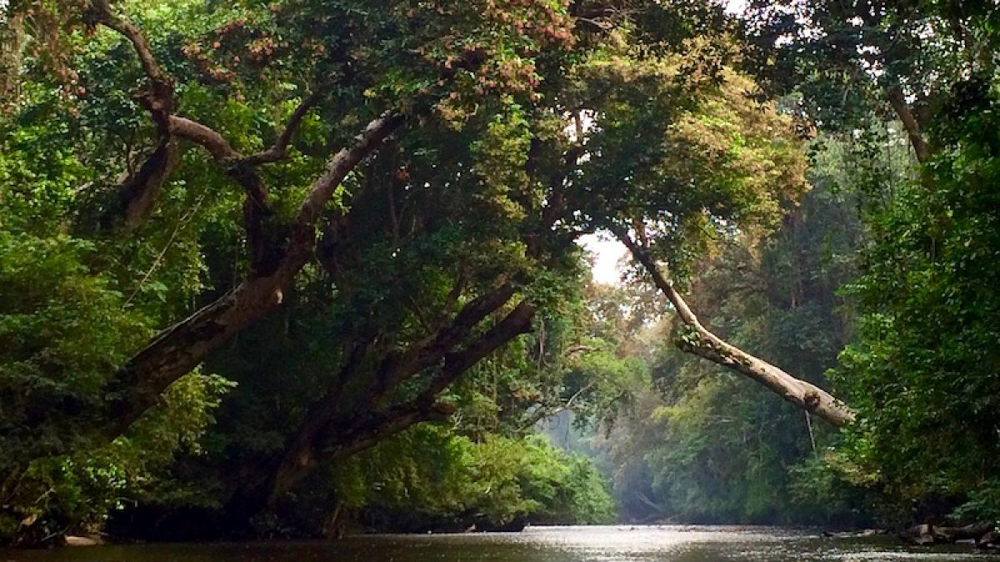
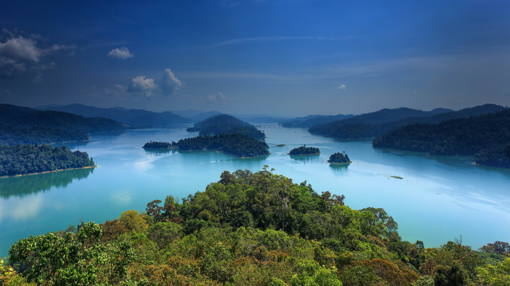
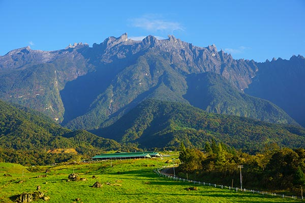
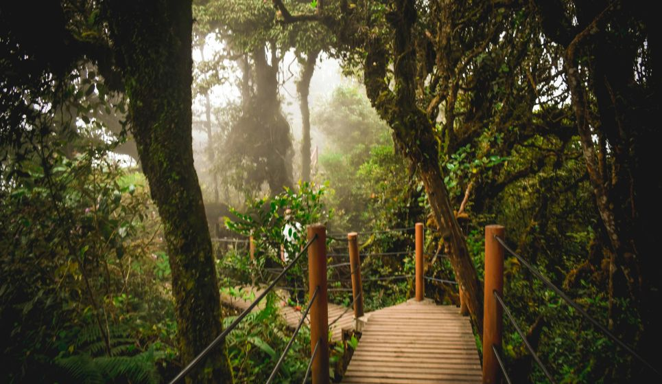

Discover the beauty of our protected lands.
From ancient rainforests to misty highlands, explore Malaysia's premier eco-tourism spots.

One of the world's oldest deciduous rainforests, estimated to be more than 130 million years old. Famous for its canopy walk and jungle trekking.

A vast, untouched wilderness bordering Thailand. It represents one of the largest continuous forest complexes in Peninsular Malaysia.

Malaysia's first World Heritage Site. Home to Mount Kinabalu and thousands of plant species found nowhere else on Earth.

A magical, high-elevation forest where clouds hang low, covering the trees in layers of moss, lichen, and ferns.
Explore popular eco-tourism sites, hiking trails, and camping spots using real-time data.